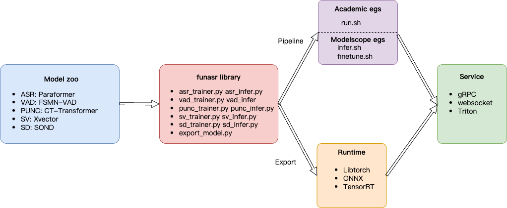

FunASR: A Fundamental End-to-End Speech Recognition Toolkit
FunASR hopes to build a bridge between academic research and industrial applications on speech recognition. By supporting the training & finetuning of the industrial-grade speech recognition model released on ModelScope, researchers and developers can conduct research and production of speech recognition models more conveniently, and promote the development of speech recognition ecology. ASR for Fun！
Overview
Installation
Quick Start
Academic Egs
ModelScope Egs
Runtime and Service
Benchmark and Leaderboard
Funasr Library
Papers
Application
FQA